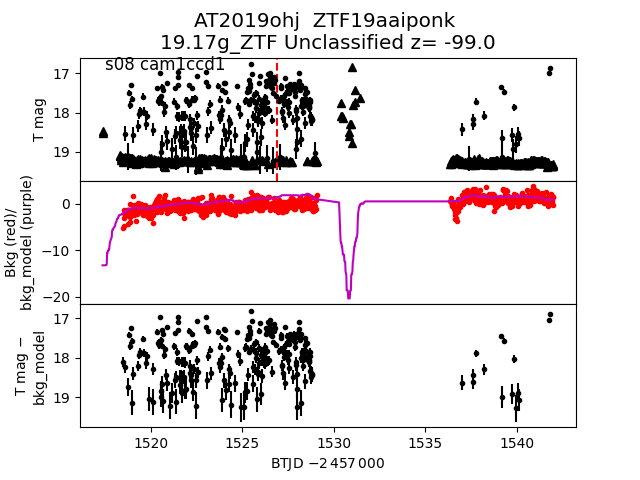
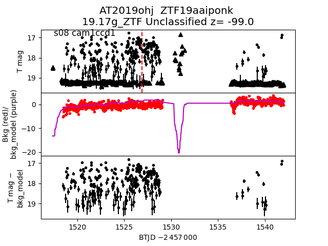

all transients in sector08 (28 total)
Each figure has three panels. The top panel shows the transient light curve, the middle panel shows the local background (estimated in an annulus), and the bottom panel shows a "background-model corrected" light curve. Details about the background model are in the README.
The vertical red line marks the time of discovery reported to TNS. Other useful metadata from TNS is in the figure title.
Note that the top and bottom panel are in magnitudes, while the middle panel is in differential flux units. The magnitudes are calibrated to the flux in the reference image used for image subtraction. Thus, flux from the host galaxy is included in these magnitudes.
3-sigma upper limits are plotted as triangles with no errorbars. A typical limiting magnitude is 19.6 in 30 minutes or 18.4 in 200 seconds (for low backgrounds).
The links allow you to download the light curve data as a text file.
More details in the README.
2019bcp
 2019auk
2019auk
 2019alq
2019alq
 2019axh
2019axh
 2019beu
2019beu
 2019ane
2019ane
 2019ohj

2019bcu
2019ohj

2019bcu
 2019aqe
2019aqe
 2019alb
2019alb
 2019bfd
2019bfd
 2019azi
2019azi
 2019bes
2019bes
 2019arw
2019arw
 2019bfb
2019bfb
 2019bfz
2019bfz
 2019atc
2019atc
 2019alj
2019alj
 2019bet
2019bet
 2019beb
2019beb
 2019bgo
2019bgo
 2019bea
2019bea
 2019bgp
2019bgp
 2019axj
2019axj
 2019ayy
2019ayy
 2019bap
2019bap
 2019caa
2019caa
 2019bca
2019bca